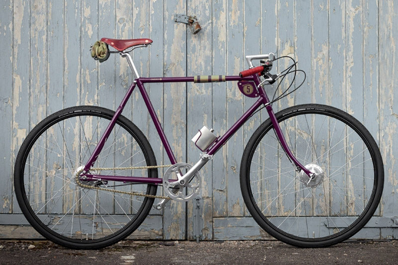
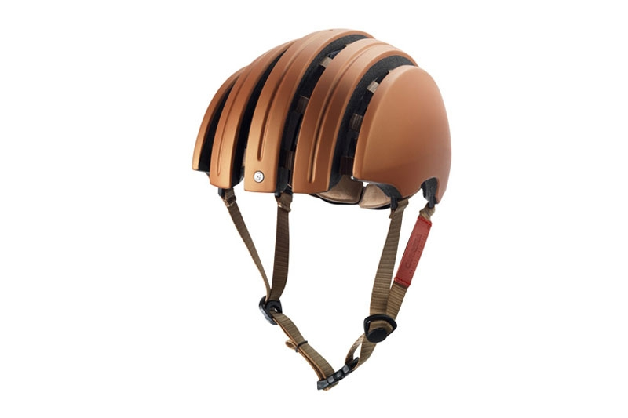
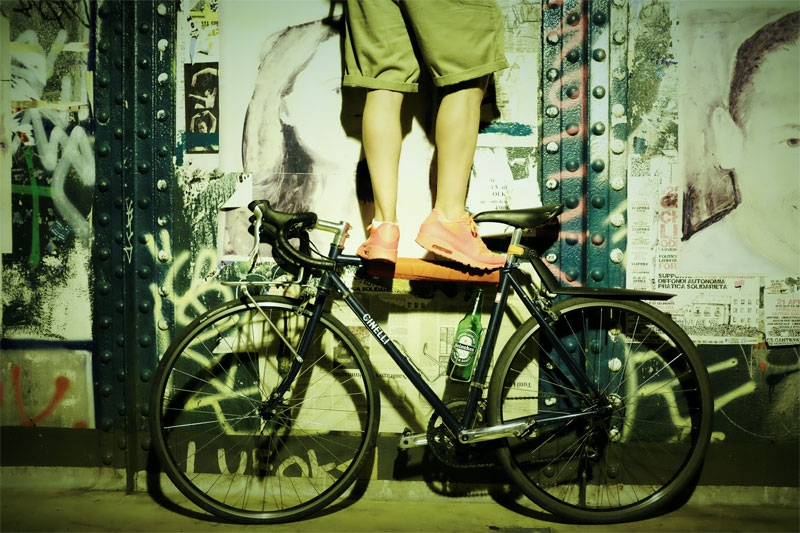
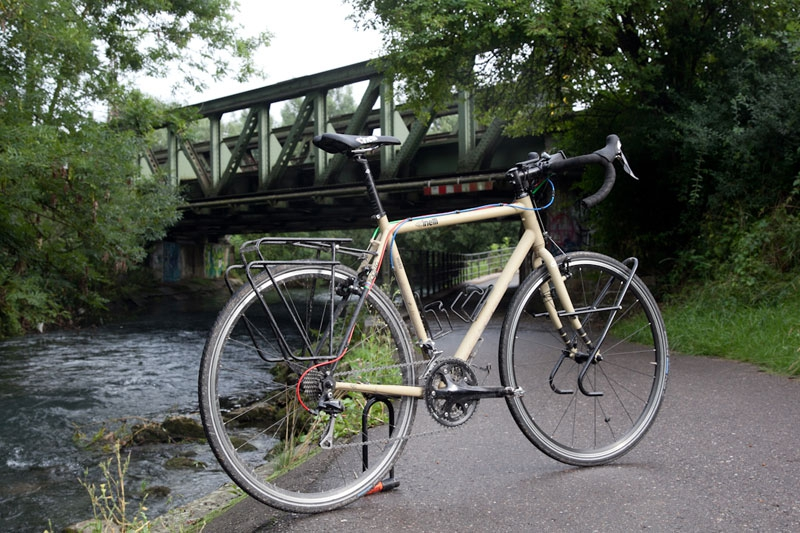
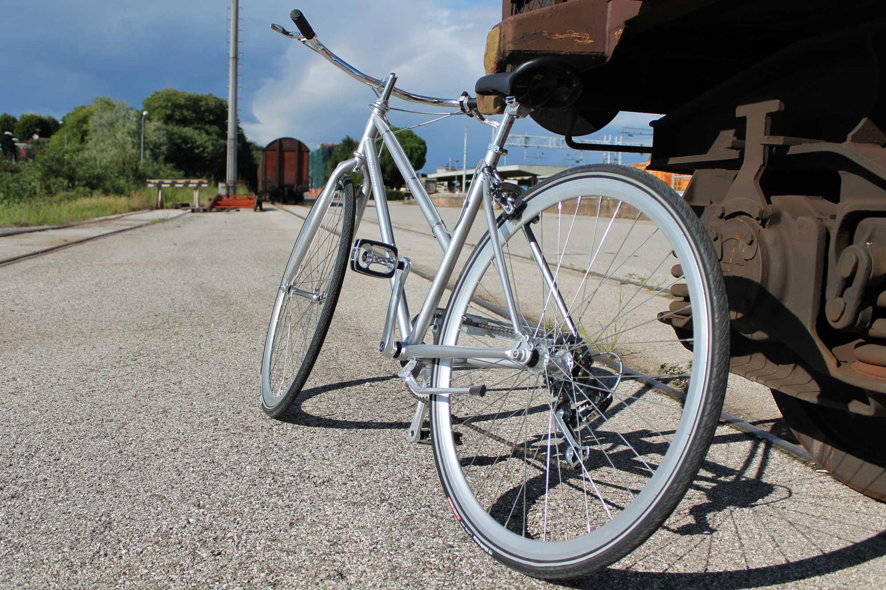
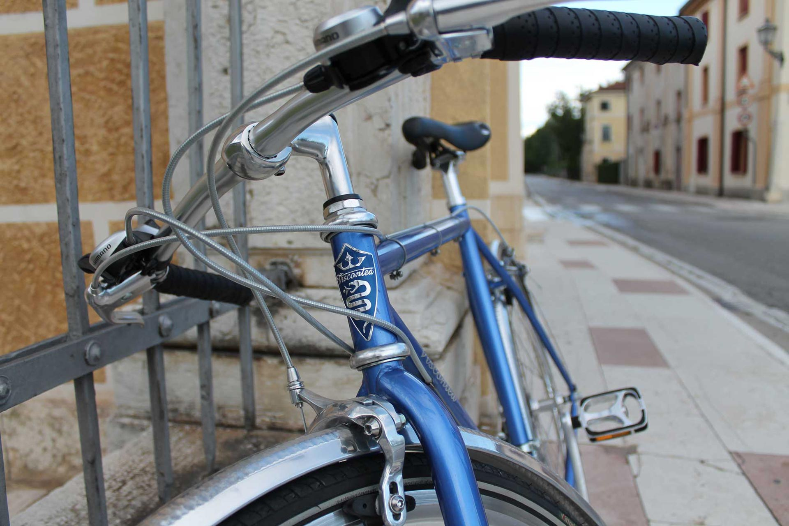
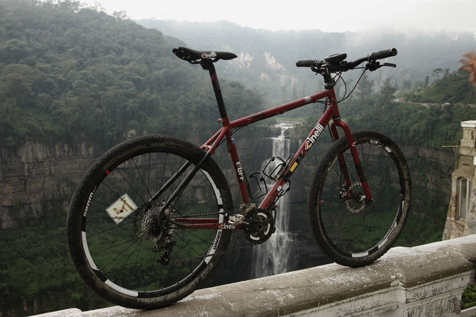
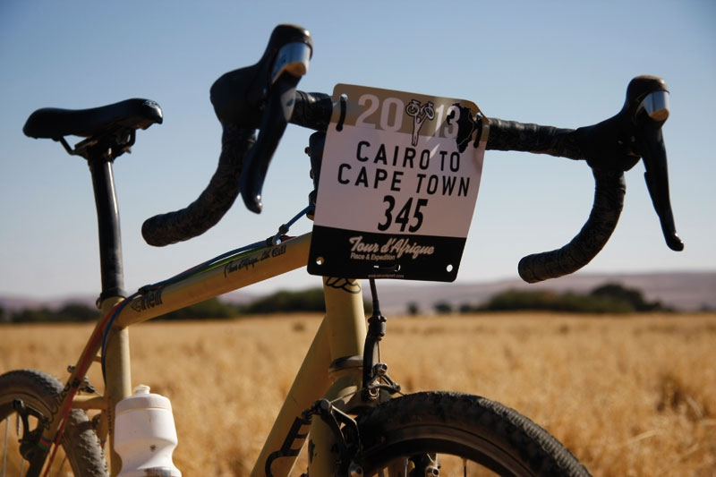

Bikes
Dai grandi classici alle proposte più ricercate e innovative: city bike, bici da viaggio, gravel. Una selezione che si rinnova di continuo — per trovare insieme la bici giusta.
City · viaggio · gravel · bimbi
Negozio · officina · Alzaia Naviglio Grande 144, Milano
Un negozio, un'officina, una finestra aperta sul mondo della bici: un punto di arrivo per risolvere problemi e dubbi, un punto di partenza per nuove avventure su due ruote.
Sul Naviglio dal 2012
Dealer ufficiale Pelago e BRN
Aperti anche la domenica
Ricambi originali in officina
Tutte le bici per tutte le persone — e tutto quello che serve per usarle ogni giorno.

Dai grandi classici alle proposte più ricercate e innovative: city bike, bici da viaggio, gravel. Una selezione che si rinnova di continuo — per trovare insieme la bici giusta.
City · viaggio · gravel · bimbi

I lucchetti veramente sicuri, i caschi più belli, borse per il turismo e il commuting, running bike per i bambini: infiniti spunti per sicurezza, comodità e stile.
Lucchetti · caschi · borse · luci

Il cuore del negozio: check-up, restyling e personalizzazioni con componenti di qualità e ricambi originali. È qui che nascono le "special" più belle e ardite.
Check-up · restyling · special
Dove ci prendiamo cura dei vostri mezzi, dove eseguiamo check-up, restyling e personalizzazioni con professionalità e competenza. È anche il luogo dove nascono le "special" più belle e ardite. Utilizziamo esclusivamente componenti di qualità, pezzi di ricambio originali, prodotti specifici, strumenti e attrezzi professionali.
Il menù dell'officina, coi tempi e i prezzi del momento, ve lo diciamo al banco o al telefono.
Chiama l'officinaWhere urban meets expedition.






Le foto vengono dal sito di Bike Republic. Altre su Instagram.
«Cosa c'è di più divertente di un semplice giro in bicicletta? Il vento sul viso, il battito del cuore che aumenta, il paesaggio che scorre, il sorriso spontaneo, il senso di libertà e leggerezza... rivivi queste emozioni regalandoti una bella bici, da Bike Republic ne abbiamo tante.»
Slow bike
A trenta metri dalla chiesa di San Cristoforo, a fianco della Canottieri Olona.
| Lunedì | chiuso |
|---|---|
| Martedì – Domenica | 10:00 – 13:00 · 15:00 – 19:30 |
La mappa è di Google: aprendola, Google riceve il tuo indirizzo IP e può usare i suoi cookie.